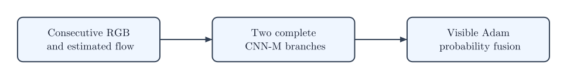
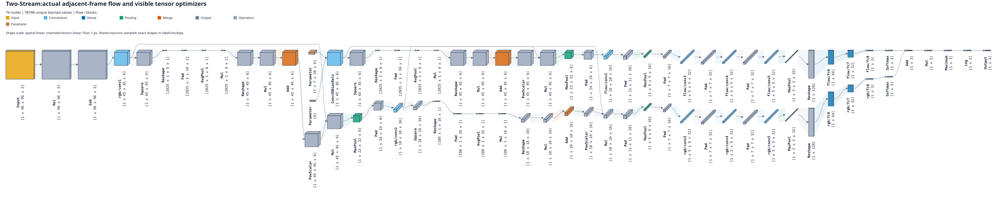
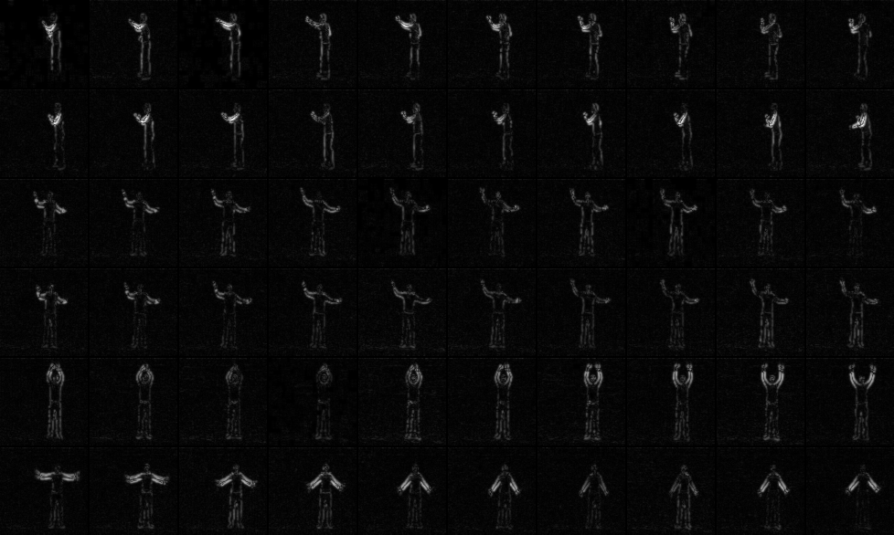
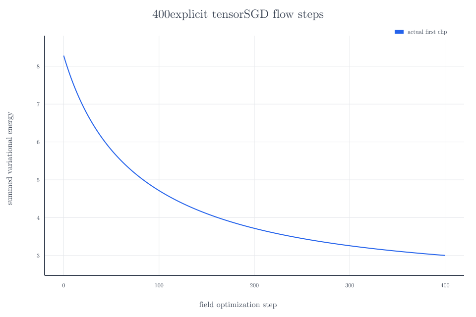
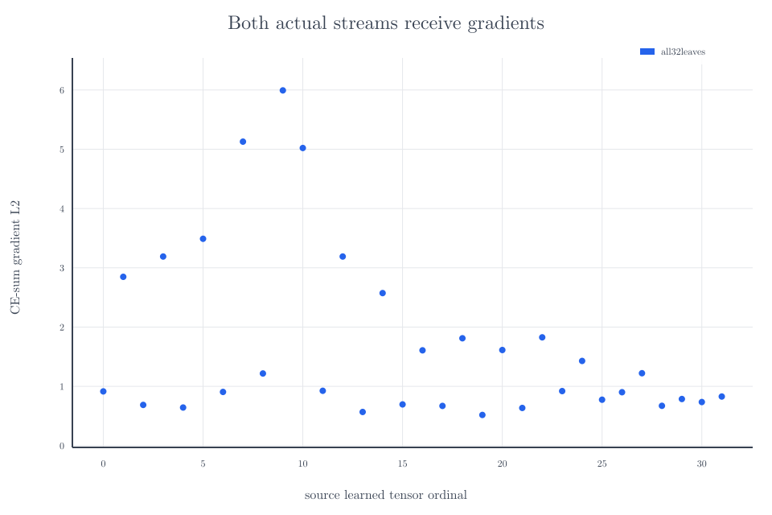
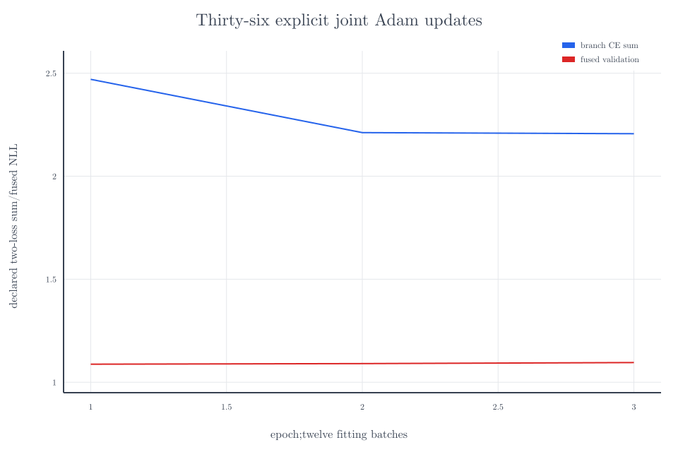
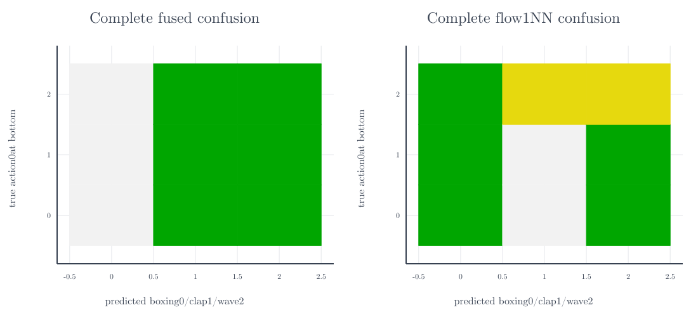
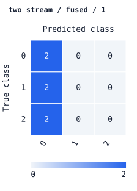

Two-Stream:actual adjacent-frame flow and visible tensor optimizers
Abstract
Action classification needs appearance and motion information from original video. A middle RGB frame and ten estimated consecutive-frame flow fields feed complete CNN-M branches,with explicit fieldSGD and classifierAdam loops and every held-out error.
Source example: examples/cpp/source/nn/1_convolutional_neural_networks/1.10_3d_and_video_convolutions/two_stream.cpp.
The method
Two disjoint CNN-M models learn spatial and temporal evidence. Centering each signed flow field removes its spatial mean;interleaving its dx/dy components supplies20channels. The learning and inference rules differ:
All preprocessing,forward,loss,optimization,inference,metrics and plot values use the tensor library. The declared flow-estimation adaptation is shown explicitly and is separate from the CNN fitting objective. Full reference geometry is an analytical census;both complete compact streams actually execute.
The concept diagram below is drawn by dm::graphics::Diagram. Its editable C++
source is the complete block below; regeneration uses the same datamunge toolchain
as the numerical examples. Exports consume the saved local SVG.
#include <dm/dm.hpp>
int main() {
std::filesystem::create_directories("build");
dm::graphics::Diagram diagram;
diagram.node("n0", {0.0, 0}, "Consecutive RGB\n and estimated flow");
diagram.node("n1", {5.2, 0}, "Two complete\n CNN-M branches");
diagram.node("n2", {10.4, 0}, "Visible Adam\n probability fusion");
diagram.edge("n0", "n1").edge("n1", "n2");
diagram.save_svg("build/two_stream_concept.svg");
}
Executed tensor architecture
This figure executes the inference configuration shown in the code, using a zero-valued shape probe without fitting or loading a checkpoint. Named stage boundaries group whole subgraphs where available; other nodes retain functional-layer detail. Exact batch-inclusive shapes and reachable parameter totals come from the trace. Shared linear scales map spatial dimensions and channel counts to blocks; the one-pixel visibility floor is disclosed in the legend. Labels use compact monospace text, rotate counterclockwise and sit beside their own glyphs. Arrows flow left to right; wide diagrams scroll at native size on the website.
#include <dm/dm.hpp>
int main() {
namespace n = dm::nn;
namespace m = n::models;
n::set_num_threads(2);
std::filesystem::create_directories("build");
const m::TwoStreamConfig c{96, 16, 64, 32, 3};
n::ParameterStore p(853);
n::Module architecture_model(
[&](const n::Tensor& image) {
return m::TwoStream(p, image, n::zeros({1, 10, 96, 96, 2}), c).log_scores;
},
"Two-Stream:actual adjacent-frame flow and visible tensor optimizers");
n::ModelPlotOptions options;
options.style = n::ModelPlotStyle::Flow;
options.detail = n::ModelPlotDetail::Blocks;
options.labels = {.type = n::ModelPlotLabel::NameAndShape, .size = 12, .wrap = 24};
options.spacing = {.layer = 24, .lane = 12, .label = 8, .margin = 20};
options.sizing.spatial_size = 96;
options.sizing.channel_size = 42;
options.sizing.minimum_extent = 1;
options.opacity = .8;
const auto diagram = architecture_model.plot(n::zeros({1, 96, 96, 3}), options);
diagram.save_svg("build/two_stream_architecture.svg");
std::print(
"{} displayed nodes; {} reachable learned values.\n",
diagram.nodes().size(),
diagram.parameter_count());
}76 displayed nodes; 78748 reachable learned values.

Original consecutive observations and genuine estimated flow
Use boxing0/handclapping1/handwaving2,scenario1,people1..4fit/5validation/6test, first two original annotated segments per AVI. Same18original KTH AVIs as the preceding video reports,pinned mirror7076149bdbeff8d70003a68d6291fd080db44683. Here select eleven CONSECUTIVE frames centered within each segment,not the sixteen widely spaced observations of the earlier video models. Original zero- based frame IDs,bounds,video/person/segment IDs and source SHA256 remain in manifest.json. FFmpeg only decodes;Float32tensor bilinear96px/255prepares RGB. The actual middle frame supplies the spatial branch;ten adjacent pairs produce signed dx/dy fields. No labels enter flow estimation or source-frame selection.
Declare the flow adaptation:single-scale Horn–Schunck-style quadratic brightness and first-difference smoothness,alpha.05,400explicit tensorSGD(.2)steps from0. This is estimated small-motion flow,not ground truth,Farneback,TV-L1 or the paper's flow preprocessing. No warping,pyramid or large-motion accuracy claim. Preparation retains every resized original frame and initial/final energy.
#include <dm/dm.hpp>
int main() {
const std::filesystem::path cache = dm::datasets::data_home();
dm::datasets::prepare_example_data("two_stream", (cache / "two_stream").string());
}Show all six genuine middle RGB observations and every ten-field magnitude map.
#include <dm/dm.hpp>
int main() {
namespace n = dm::nn;
namespace m = n::models;
n::set_num_threads(2);
std::filesystem::path cache;
if (const auto *p = std::getenv("DATAMUNGE_DATA_DIR"))
cache = p;
else if (const auto *p = std::getenv("XDG_CACHE_HOME"))
cache = std::filesystem::path(p) / "datamunge/datasets";
else
cache = std::filesystem::path(std::getenv("HOME")) / ".cache/datamunge/datasets";
std::filesystem::path root = cache / "two_stream";
if (const auto *v = std::getenv("DATAMUNGE_TWO_STREAM_DIR"))
root = v;
else
dm::datasets::prepare_example_data("two_stream", root.string());
const auto pools = m::LoadTwoStream(root);
const auto &fit = pools[0];
const auto &validation = pools[1];
const auto &test = pools[2];
const auto magnitude = n::sqrt(n::sum(n::square(test.at("flow")), {4}, true));
const auto peak = n::max(magnitude).item();
n::save_image_grid(n::sqrt(magnitude / peak).reshape({60, 96, 96, 1}),
"build/two_stream_flow.png", 10, 0, 1, 2, 0, 1);
std::filesystem::copy_file("build/two_stream_flow.png", "figures/two_stream_flow.png",
std::filesystem::copy_options::overwrite_existing);
n::save_image_grid(test.at("rgb"), "build/two_stream_data.png", 3, 0, 1, 2, 0, 3);
std::print("| held-out row | action | person | video | segment | mean flow magnitude(px) "
"|\n|---:|---:|---:|---:|---:|---:|\n");
for (int i = 0; i < 6; ++i)
std::print("| {} | {} | {} | {} | {} | {:.6f} |\n", i, test.at("label").at({i}),
test.at("person").at({i}), test.at("video_id").at({i}),
test.at("segment").at({i}), n::mean(n::select(magnitude, 0, i)).item());
std::print("Shared magnitude display range0..{:.6f}px across ALL60fields.\n", peak);
}KTH fit:24 RGB+flow pairs,4 people,12 source AVIs KTH validation:6 RGB+flow pairs,1 people,3 source AVIs KTH test:6 RGB+flow pairs,1 people,3 source AVIs
| held-out row | action | person | video | segment | mean flow magnitude(px) |
|---|---|---|---|---|---|
| 0 | 0 | 6 | 5 | 0 | 0.011385 |
| 1 | 0 | 6 | 5 | 1 | 0.011206 |
| 2 | 1 | 6 | 11 | 0 | 0.006666 |
| 3 | 1 | 6 | 11 | 1 | 0.006507 |
| 4 | 2 | 6 | 17 | 0 | 0.010603 |
| 5 | 2 | 6 | 17 | 1 | 0.011824 |
Shared magnitude display range0..2.562397px across ALL60fields.

Visible tensor optimization of a real adjacent-frame field
LetIx,Iy,Itbe2x2brightness derivatives. Spatial derivative kernels divide by4 and apply to first+second;the temporal2x2mean applies to second-first. Symmetric bottom/right borders keep original pixel dimensions. The objective is a half SUM,so each independent pixel receives an unaveraged gradient:
Below repeat the exact400step preparation on the first genuine fitting clip, using all ten adjacent pairs,and compare every resulting displacement value against the prepared archive. The optimizer leaves are the actual dx/dy fields; no learned flow model or hidden solver is used.
#include <dm/dm.hpp>
int main() {
namespace n = dm::nn;
namespace m = n::models;
n::set_num_threads(2);
std::filesystem::path cache;
if (const auto *p = std::getenv("DATAMUNGE_DATA_DIR"))
cache = p;
else if (const auto *p = std::getenv("XDG_CACHE_HOME"))
cache = std::filesystem::path(p) / "datamunge/datasets";
else
cache = std::filesystem::path(std::getenv("HOME")) / ".cache/datamunge/datasets";
std::filesystem::path root = cache / "two_stream";
if (const auto *v = std::getenv("DATAMUNGE_TWO_STREAM_DIR"))
root = v;
else
dm::datasets::prepare_example_data("two_stream", root.string());
const auto pools = m::LoadTwoStream(root);
const auto &fit = pools[0];
const auto &validation = pools[1];
const auto &test = pools[2];
n::Tensor frames;
const auto prefix = std::to_string(int(fit.at("video_id").at({0}))) + "/" +
std::to_string(int(fit.at("segment").at({0}))) + "/rgb";
for (const auto &[key, value] : n::load_npz((root / "flow_audit.npz").string()))
if (key == prefix)
frames = value;
if (!frames.defined())
return 1;
const auto gray =
n::sum(frames * n::from_vector(std::vector<float>{.299f, .587f, .114f}, {1, 1, 1, 3}),
{3}, true);
const auto d = m::TwoStreamFlowDerivatives(n::slice_axis(gray, 0, 0, 10),
n::slice_axis(gray, 0, 1, 11));
n::ParameterStore flow;
const auto u = flow.get("u", {10, 96, 96, 1}, n::init::zeros()),
v = flow.get("v", {10, 96, 96, 1}, n::init::zeros());
n::OptimizerConfig options;
options.kind = n::OptimizerKind::Sgd;
n::Optimizer sgd(flow, .2, options);
std::vector<n::Tensor> energy;
for (int step = 0; step < 400; ++step) {
const auto loss = m::TwoStreamFlowEnergy(u, v, d, .05);
energy.push_back(loss.detach());
sgd.step(n::grad(loss, flow.parameters()));
}
energy.push_back(m::TwoStreamFlowEnergy(u, v, d, .05).detach());
const auto actual = n::concat({u.detach(), v.detach()}, 3);
const auto parity = n::max(n::abs(actual - n::select(fit.at("flow"), 0, 0)));
if (parity.item() != 0)
return 1;
std::print("All{}actual dx/dy values replay exactly;energy {:.9g}->{:.9g}.\n",
actual.numel(), energy.front().item(), energy.back().item());
auto plot = dm::graphics::RPlot::create();
plot.lines(n::arange(0, 401).to_vector<double>(), n::stack(energy, 0).to_vector<double>(),
"actual first clip", {37, 99, 235})
.title("400explicit tensorSGD flow steps")
.x_label("field optimization step")
.y_label("summed variational energy");
plot.save_svg("build/two_stream_flow_fit.svg");
}KTH fit:24 RGB+flow pairs,4 people,12 source AVIs KTH validation:6 RGB+flow pairs,1 people,3 source AVIs KTH test:6 RGB+flow pairs,1 people,3 source AVIs All184320actual dx/dy values replay exactly;energy 8.28073692->3.00280547.

Complete streams,centered channel order and probability fusion
Each CNN-M branch retains five conv/ReLU layers,three pools,two hidden ReLU layers and a linear categorical head. Kernels7/5/3/3/3,strides2/2/1/1/1,widths 96/256/512/512/512divided16in compact execution. Explicit borders and the second-pool bottom/right negative-infinity padding match source geometry. RGB has LRN after conv1/2;flow only after conv1. Two keep.5hidden dropouts per stream have four independent RNGs. All32leaves/78748values actually execute. Full224px/FC4096/2048/101classes census181335594is ANALYTICAL in the source, not an allocated full-reference run.
Flow is centered independently per field/component over spatial pixels,clipped [-10,10]/10and stacked dx0,dy0,...,dx9,dy9. Fusion averages separate SOFTMAX probabilities,not logits. The fitting objective is the SUM of two branch mean cross-entropies;validation uses log of the fused probabilities with1e-8floor.
#include <dm/dm.hpp>
int main() {
namespace n = dm::nn;
namespace m = n::models;
n::set_num_threads(2);
std::filesystem::path cache;
if (const auto *p = std::getenv("DATAMUNGE_DATA_DIR"))
cache = p;
else if (const auto *p = std::getenv("XDG_CACHE_HOME"))
cache = std::filesystem::path(p) / "datamunge/datasets";
else
cache = std::filesystem::path(std::getenv("HOME")) / ".cache/datamunge/datasets";
std::filesystem::path root = cache / "two_stream";
if (const auto *v = std::getenv("DATAMUNGE_TWO_STREAM_DIR"))
root = v;
else
dm::datasets::prepare_example_data("two_stream", root.string());
const auto pools = m::LoadTwoStream(root);
const auto &fit = pools[0];
const auto &validation = pools[1];
const auto &test = pools[2];
const m::TwoStreamConfig c{96, 16, 64, 32, 3};
n::ParameterStore p(853);
std::vector<n::Generator> drops{n::Generator(823), n::Generator(827), n::Generator(829),
n::Generator(839)};
{
n::NoGradGuard guard;
m::TwoStream(p, n::zeros({1, 96, 96, 3}), n::zeros({1, 10, 96, 96, 2}), c);
}
auto predict = [&](const m::TwoStreamData &d) {
n::NoGradGuard guard;
std::vector<n::Tensor> parts;
for (std::int64_t start = 0; start < d.at("rgb").size(0); start += 2) {
const auto end = std::min<std::int64_t>(start + 2, d.at("rgb").size(0));
parts.push_back(m::TwoStream(p, n::slice_axis(d.at("rgb"), 0, start, end),
n::slice_axis(d.at("flow"), 0, start, end), c)
.log_scores);
}
return n::concat(parts, 0);
};
auto rows = [](const m::TwoStreamData &d, const std::vector<std::int64_t> &ids) {
m::TwoStreamData out;
for (const auto &[key, value] : d)
out.emplace(key, n::take_rows(value, ids));
return out;
};
const auto d = rows(fit, {0, 1});
const auto out = m::TwoStream(p, d.at("rgb"), d.at("flow"), c, true, &drops);
const auto loss = n::sparse_softmax_cross_entropy(out.rgb.logits, d.at("label")) +
n::sparse_softmax_cross_entropy(out.flow.logits, d.at("label"));
const auto gradients = n::grad(loss, p.parameters());
std::vector<n::Tensor> norms;
for (const auto &g : gradients) {
if (!n::all(n::is_finite(g)).item<bool>() || n::sum(n::square(g)).item() <= 0)
return 1;
norms.push_back(n::sqrt(n::sum(n::square(g))));
}
std::print("{}values/{}learned leaves,all32finite/nonzero derivatives;stack {},flat "
"RGB/flow {}/{}.\n",
p.count(), p.size(), out.stack.shape(), out.rgb.flat.shape(),
out.flow.flat.shape());
std::print("| convolution | RGB shape | flow shape |\n|---:|---|---|\n");
for (int i = 0; i < 5; ++i)
std::print("| {} | {} | {} |\n", i + 1, out.rgb.conv[i].shape(), out.flow.conv[i].shape());
auto plot = dm::graphics::RPlot::create();
plot.points(n::arange(0, 32).to_vector<double>(), n::stack(norms, 0).to_vector<double>(),
"all32leaves", {37, 99, 235})
.title("Both actual streams receive gradients")
.x_label("source learned tensor ordinal")
.y_label("CE-sum gradient L2");
plot.save_svg("build/two_stream_gradients.svg");
}KTH fit:24 RGB+flow pairs,4 people,12 source AVIs KTH validation:6 RGB+flow pairs,1 people,3 source AVIs KTH test:6 RGB+flow pairs,1 people,3 source AVIs 78748values/32learned leaves,all32finite/nonzero derivatives;stack [2, 96, 96, 20],flat RGB/flow [2, 128]/[2, 128].
| convolution | RGB shape | flow shape |
|---|---|---|
| 1 | [2, 45, 45, 6] | [2, 45, 45, 6] |
| 2 | [2, 10, 10, 16] | [2, 10, 10, 16] |
| 3 | [2, 5, 5, 32] | [2, 5, 5, 32] |
| 4 | [2, 5, 5, 32] | [2, 5, 5, 32] |
| 5 | [2, 5, 5, 32] | [2, 5, 5, 32] |

Every explicit joint Adam update
Parameter seed853,dropout823/827/829/839,order857,batch2. The first-two-clip CE-sum gradient probe consumes all four dropout streams before fitting,matching the original workflow. Three epochs give36joint updates;both disjoint streams receive their own CE gradient in each update. No learned fusion weight exists. Select all32parameters together by validation fused NLL,then restore.
#include <dm/dm.hpp>
int main() {
namespace n = dm::nn;
namespace m = n::models;
n::set_num_threads(2);
std::filesystem::path cache;
if (const auto *p = std::getenv("DATAMUNGE_DATA_DIR"))
cache = p;
else if (const auto *p = std::getenv("XDG_CACHE_HOME"))
cache = std::filesystem::path(p) / "datamunge/datasets";
else
cache = std::filesystem::path(std::getenv("HOME")) / ".cache/datamunge/datasets";
std::filesystem::path root = cache / "two_stream";
if (const auto *v = std::getenv("DATAMUNGE_TWO_STREAM_DIR"))
root = v;
else
dm::datasets::prepare_example_data("two_stream", root.string());
const auto pools = m::LoadTwoStream(root);
const auto &fit = pools[0];
const auto &validation = pools[1];
const auto &test = pools[2];
const m::TwoStreamConfig c{96, 16, 64, 32, 3};
n::ParameterStore p(853);
std::vector<n::Generator> drops{n::Generator(823), n::Generator(827), n::Generator(829),
n::Generator(839)};
{
n::NoGradGuard guard;
m::TwoStream(p, n::zeros({1, 96, 96, 3}), n::zeros({1, 10, 96, 96, 2}), c);
}
auto predict = [&](const m::TwoStreamData &d) {
n::NoGradGuard guard;
std::vector<n::Tensor> parts;
for (std::int64_t start = 0; start < d.at("rgb").size(0); start += 2) {
const auto end = std::min<std::int64_t>(start + 2, d.at("rgb").size(0));
parts.push_back(m::TwoStream(p, n::slice_axis(d.at("rgb"), 0, start, end),
n::slice_axis(d.at("flow"), 0, start, end), c)
.log_scores);
}
return n::concat(parts, 0);
};
auto rows = [](const m::TwoStreamData &d, const std::vector<std::int64_t> &ids) {
m::TwoStreamData out;
for (const auto &[key, value] : d)
out.emplace(key, n::take_rows(value, ids));
return out;
};
const auto initial = m::ScoreSequenceClassifier(predict(fit), fit.at("label")).nll;
const auto untrained = predict(test);
const auto probe = rows(fit, {0, 1});
const auto out = m::TwoStream(p, probe.at("rgb"), probe.at("flow"), c, true, &drops);
const auto checked =
n::grad(n::sparse_softmax_cross_entropy(out.rgb.logits, probe.at("label")) +
n::sparse_softmax_cross_entropy(out.flow.logits, probe.at("label")),
p.parameters());
for (const auto &g : checked)
if (!n::all(n::is_finite(g)).item<bool>() || n::sum(n::square(g)).item() <= 0)
return 1;
n::OptimizerConfig options;
options.kind = n::OptimizerKind::Adam;
n::Optimizer adam(p, .001, options);
n::BatchOrder order(24, 2, 857);
double best = INFINITY;
int selected = 0, updates = 0;
std::vector<n::Tensor> history;
std::print("| epoch | dropout branch CE sum | validation fused NLL |\n|---:|---:|---:|\n");
for (int epoch = 1; epoch <= 3; ++epoch) {
order.begin_epoch();
auto average = n::zeros({}, n::DType::Float64);
for (;;) {
const auto ids = order.next();
if (ids.empty())
break;
const auto batch = rows(fit, ids);
const auto path = m::TwoStream(p, batch.at("rgb"), batch.at("flow"), c, true, &drops);
const auto loss = n::sparse_softmax_cross_entropy(path.rgb.logits, batch.at("label")) +
n::sparse_softmax_cross_entropy(path.flow.logits, batch.at("label"));
average = average + loss.detach().to(n::DType::Float64) / 12.;
adam.step(n::grad(loss, p.parameters()));
++updates;
}
const auto val =
m::ScoreSequenceClassifier(predict(validation), validation.at("label")).nll;
if (val.item() < best) {
best = val.item();
selected = epoch;
n::NamedTensors arrays;
for (std::size_t i = 0; i < p.size(); ++i)
arrays.push_back({p.names()[i], p.parameters()[i]});
n::save_npz("build/two_stream_best.npz", arrays);
}
history.push_back(n::stack({average, val}, 0));
std::print("| {} | {:.6f} | {:.6f} |\n", epoch, average.item(), val.item());
}
for (const auto &[key, value] : n::load_npz("build/two_stream_best.npz"))
p.set(key, value);
const auto fitted = m::ScoreSequenceClassifier(predict(fit), fit.at("label")).nll;
n::save_npz("build/two_stream_outputs.npz",
{{"logits", predict(test)}, {"untrained", untrained}});
std::print("{}explicit joint Adam updates;selected {},validation {:.6f};fixed fused fitNLL "
"{:.9f}->{:.9f}.\n",
updates, selected, best, initial.item(), fitted.item());
const auto h = n::stack(history, 0);
auto plot = dm::graphics::RPlot::create();
plot.lines(n::arange(1, 4).to_vector<double>(), n::select(h, 1, 0).to_vector<double>(),
"branch CE sum", {37, 99, 235})
.lines(n::arange(1, 4).to_vector<double>(), n::select(h, 1, 1).to_vector<double>(),
"fused validation", {220, 38, 38})
.title("Thirty-six explicit joint Adam updates")
.x_label("epoch;twelve fitting batches")
.y_label("declared two-loss sum/fused NLL");
plot.save_svg("build/two_stream_training.svg");
}KTH fit:24 RGB+flow pairs,4 people,12 source AVIs KTH validation:6 RGB+flow pairs,1 people,3 source AVIs KTH test:6 RGB+flow pairs,1 people,3 source AVIs
| epoch | dropout branch CE sum | validation fused NLL |
|---|---|---|
| 1 | 2.470278 | 1.087580 |
| 2 | 2.211625 | 1.090458 |
| 3 | 2.206370 | 1.095502 |
36explicit joint Adam updates;selected 1,validation 1.087580;fixed fused fitNLL 1.122472787->1.089305363.

Validation selects epoch 1 with fused NLL of 1.087580. Fixed fitting fused NLL falls from 1.122472787 to 1.089305363. The model predicts boxing on all six held-out clips, for 2/6 accuracy and NLL of 1.075934. The fixed flow 1-NN reference gets 3/6 correct with NLL of 1.051445.
Fresh restoration and modality interventions
Restore a fresh store and check saved/repeated logits,single/batch agreement and all32leaves unchanged. The spatial and temporal branch predictions,RGB and absolute-flow memory1NN references,initialization and three interventions are all scored on every held-out clip. Memory1NN has no learned parameters and uses fitting-only tensor population standardization. Zero flow,neutral RGB and reversed stack order are inference controls,not retrained ablation studies.
#include <dm/dm.hpp>
int main() {
namespace n = dm::nn;
namespace m = n::models;
n::set_num_threads(2);
std::filesystem::path cache;
if (const auto *p = std::getenv("DATAMUNGE_DATA_DIR"))
cache = p;
else if (const auto *p = std::getenv("XDG_CACHE_HOME"))
cache = std::filesystem::path(p) / "datamunge/datasets";
else
cache = std::filesystem::path(std::getenv("HOME")) / ".cache/datamunge/datasets";
std::filesystem::path root = cache / "two_stream";
if (const auto *v = std::getenv("DATAMUNGE_TWO_STREAM_DIR"))
root = v;
else
dm::datasets::prepare_example_data("two_stream", root.string());
const auto pools = m::LoadTwoStream(root);
const auto &fit = pools[0];
const auto &validation = pools[1];
const auto &test = pools[2];
const m::TwoStreamConfig c{96, 16, 64, 32, 3};
n::ParameterStore p(853);
std::vector<n::Generator> drops{n::Generator(823), n::Generator(827), n::Generator(829),
n::Generator(839)};
{
n::NoGradGuard guard;
m::TwoStream(p, n::zeros({1, 96, 96, 3}), n::zeros({1, 10, 96, 96, 2}), c);
}
auto predict = [&](const m::TwoStreamData &d) {
n::NoGradGuard guard;
std::vector<n::Tensor> parts;
for (std::int64_t start = 0; start < d.at("rgb").size(0); start += 2) {
const auto end = std::min<std::int64_t>(start + 2, d.at("rgb").size(0));
parts.push_back(m::TwoStream(p, n::slice_axis(d.at("rgb"), 0, start, end),
n::slice_axis(d.at("flow"), 0, start, end), c)
.log_scores);
}
return n::concat(parts, 0);
};
auto rows = [](const m::TwoStreamData &d, const std::vector<std::int64_t> &ids) {
m::TwoStreamData out;
for (const auto &[key, value] : d)
out.emplace(key, n::take_rows(value, ids));
return out;
};
for (const auto &[key, value] : n::load_npz("build/two_stream_best.npz"))
p.set(key, value);
const auto before = p.flatten();
n::Tensor saved, untrained;
for (const auto &[key, value] : n::load_npz("build/two_stream_outputs.npz")) {
if (key == "logits")
saved = value;
if (key == "untrained")
untrained = value;
}
const auto logits = predict(test), single = predict(rows(test, {0}));
auto zero = test, neutral = test, reverse = test;
zero["flow"] = n::zeros(test.at("flow").shape());
neutral["rgb"] = n::full(test.at("rgb").shape(), .5);
reverse["flow"] = n::reverse(test.at("flow"), {1});
const auto z = predict(zero), gray = predict(neutral), rev = predict(reverse);
const auto parity = n::max(n::abs(logits - saved)),
batch = n::max(n::abs(single - n::slice_axis(logits, 0, 0, 1))),
dz = n::sum(n::abs(logits - z)), drgb = n::sum(n::abs(logits - gray)),
dorder = n::sum(n::abs(logits - rev));
if (parity.item() != 0 || n::max(n::abs(logits - predict(test))).item() != 0 ||
batch.item() > 1e-6 || dz.item() <= 1e-7 || drgb.item() <= 1e-7 ||
dorder.item() <= 1e-7 || before != p.flatten())
return 1;
std::print(
"Fresh restore/repeat {},single/batch "
"{:.9g},all32immutable;zero-flow/neutral-RGB/reverse-order L1 {:.9g}/{:.9g}/{:.9g}.\n",
parity.item(), batch.item(), dz.item(), drgb.item(), dorder.item());
n::NoGradGuard guard;
const auto branch = m::TwoStream(p, test.at("rgb"), test.at("flow"), c);
std::vector<std::pair<std::string, n::Tensor>> predictions = {
{"fused", logits},
{"RGB", branch.rgb.logits},
{"flow", branch.flow.logits},
{"initial", untrained},
{"RGB1NN", m::TwoStreamNearest(fit, test, false)},
{"flow1NN", m::TwoStreamNearest(fit, test, true)},
{"zero flow", z},
{"neutral RGB", gray},
{"reversed stack", rev}};
std::print("| predictor | accuracy | macroF1 | NLL | all recalls | all confusion counts "
"|\n|---|---:|---:|---:|---|---|\n");
for (const auto &[name, value] : predictions) {
const auto score = m::ScoreSensor(value, test.at("label"), 3);
std::print("| {} | {:.6f} | {:.6f} | {:.6f} | {} | {} |\n", name, score.accuracy,
score.macro_f1, score.nll, score.recall, score.confusion);
}
{
n::ConfusionMatrix current_counts(3);
current_counts.add(test.at("label"), n::argmax(logits, 1));
n::save_npz("build/two_stream_heldout_"+std::string("0")+".npz",{{"truth",test.at("label")},{"logits",logits},{"counts",current_counts.to_tensor()}});
}
const auto labels = n::argmax(logits, 1);
std::print(
"\n| source video | segment | true action | fused action |\n|---:|---:|---:|---:|\n");
for (int i = 0; i < 6; ++i)
std::print("| {} | {} | {} | {} |\n", test.at("video_id").at({i}),
test.at("segment").at({i}), test.at("label").at({i}), labels.at({i}));
auto a = n::plot_tensor_map(
n::reverse(m::ScoreSequenceClassifier(logits, test.at("label")).confusion, {0}), 0,
2),
b = n::plot_tensor_map(
n::reverse(m::ScoreSequenceClassifier(m::TwoStreamNearest(fit, test, true),
test.at("label"))
.confusion,
{0}),
0, 2);
a.title("Complete fused confusion")
.x_label("predicted boxing0/clap1/wave2")
.y_label("true action0at bottom");
b.title("Complete flow1NN confusion")
.x_label("predicted boxing0/clap1/wave2")
.y_label("true action0at bottom");
auto layout = dm::graphics::RLayout::create(1, 2);
layout.add(a).add(b).size(1100, 500).fit_panels().save_svg("build/two_stream_confusion.svg");
}KTH fit:24 RGB+flow pairs,4 people,12 source AVIs KTH validation:6 RGB+flow pairs,1 people,3 source AVIs KTH test:6 RGB+flow pairs,1 people,3 source AVIs Fresh restore/repeat 0,single/batch 0,all32immutable;zero-flow/neutral-RGB/reverse-order L1 0.20131737/0.80239588/0.115843475.
| predictor | accuracy | macroF1 | NLL | all recalls | all confusion counts |
|---|---|---|---|---|---|
| fused | 0.333333 | 0.166667 | 1.075934 | [1, 0, 0] | [2, 0, 0, 2, 0, 0, 2, 0, 0] |
| RGB | 0.500000 | 0.412698 | 1.059143 | [1, 0, 0.5] | [2, 0, 0, 2, 0, 0, 1, 0, 1] |
| flow | 0.333333 | 0.166667 | 1.093877 | [1, 0, 0] | [2, 0, 0, 2, 0, 0, 2, 0, 0] |
| initial | 0.333333 | 0.222222 | 1.126989 | [1, 0, 0] | [2, 0, 0, 0, 0, 2, 2, 0, 0] |
| RGB1NN | 0.333333 | 0.166667 | 1.218111 | [1, 0, 0] | [2, 0, 0, 2, 0, 0, 2, 0, 0] |
| flow1NN | 0.500000 | 0.412698 | 1.051445 | [0, 1, 0.5] | [0, 2, 0, 0, 2, 0, 0, 1, 1] |
| zero flow | 0.333333 | 0.166667 | 1.079525 | [1, 0, 0] | [2, 0, 0, 2, 0, 0, 2, 0, 0] |
| neutral RGB | 0.333333 | 0.166667 | 1.095522 | [1, 0, 0] | [2, 0, 0, 2, 0, 0, 2, 0, 0] |
| reversed stack | 0.333333 | 0.166667 | 1.073574 | [1, 0, 0] | [2, 0, 0, 2, 0, 0, 2, 0, 0] |
| source video | segment | true action | fused action |
|---|---|---|---|
| 5 | 0 | 0 | 0 |
| 5 | 1 | 0 | 0 |
| 11 | 0 | 1 | 0 |
| 11 | 1 | 1 | 0 |
| 17 | 0 | 2 | 0 |
| 17 | 1 | 2 | 0 |

Annotated confusion counts
The following program replots the current held-out evaluation counts printed in the
predictor tables above. It reproduces those recorded measurements without refitting
or re-evaluating the model. ConfusionMatrix::from_counts owns the integer tensor
counts and save_svg labels every cell. True class zero is the *top* row and
predicted class zero the left column. Counts are exact; colors use the observed
count range. Source class meanings remain those declared for the dataset above.
#include <dm/dm.hpp>
int main() {
namespace n = dm::nn;
std::filesystem::create_directories("build");
{
n::Tensor counts;
for (const auto &[key, value] : n::load_npz("build/two_stream_heldout_0.npz"))
if (key == "counts") counts = value;
const auto matrix = n::ConfusionMatrix::from_counts(counts);
matrix.save_svg(
"build/two_stream_confusion_api_0.svg",
{.title = "two stream / fused / 1", .cell_size = 52, .font_size = 13});
std::print("Current evaluation 1: 6 observations; accuracy {:.6f}.\n", matrix.accuracy());
}
}Current evaluation 1: 6 observations; accuracy 0.333333.

Regenerate adjacent views from this run
#include <dm/dm.hpp>
int main(){std::filesystem::copy_file("build/two_stream_flow.png","build/export_two_stream_flow.png",std::filesystem::copy_options::overwrite_existing);}Conclusion
Original adjacent observations and declared tensor flow estimation make both modalities inspectable. Complete stream graphs,independent formula checks,explicit joint Adam,paired source identities and all held-out/control errors support an implementation example without a published flow or action benchmark claim.
References
- [Simonyan and Zisserman(2014),Two-Stream Convolutional Networks for Action Recognition in Videos](https://arxiv.org/abs/1406.2199).
- [Horn and Schunck(1981),Determining Optical Flow](https://people.csail.mit.edu/bkph/papers/Optical_Flow_OPT.pdf).
- [Original KTH action data](https://www.csc.kth.se/cvap/actions/).